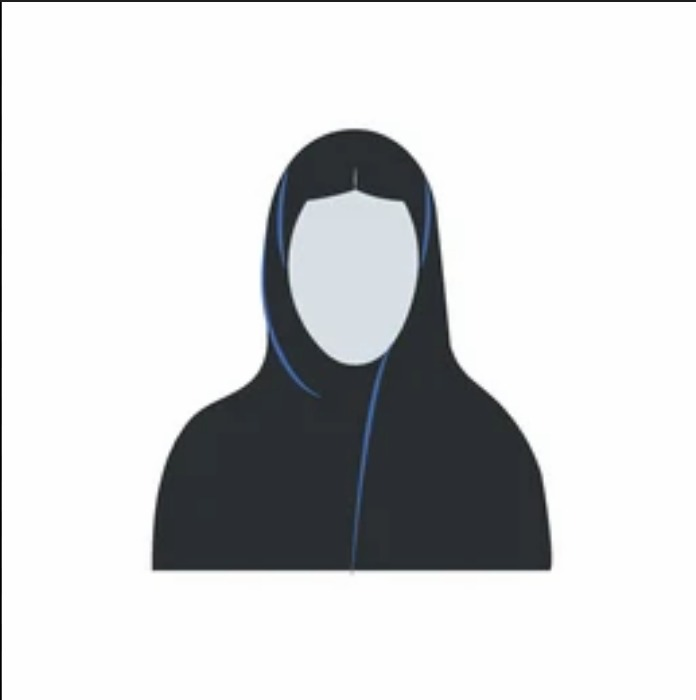

I am a Software Engineering student at the University of Jeddah. I have always been passionate about the tech field since my childhood. I became interested in web development, so I asked my uncle to teach me HTML. I learned HTML when I was 13 years old, and he taught me all the basics I needed at that time. Since then, my passion for the tech field has only grown stronger. I am constantly learning and improving my skills to become a professional developer.
The first school I attended was Al-Deker School, where I completed my education journey from primary school to high school. After that, I was accepted into Software Engineering at University of Jeddah.
As any major in tech field nowadays, we need to continuously learn new things, even outside our field, to improve our skills. Therefore, I usually attend workshops as much as I can.
Some of the courses that i attended :
In our Digital Logic Design course we made this Digital Comparator and Symbol Display System that compares two 4-bit binary numbers (A and B). It determines whether A = B, A < B, or A > B, then displays the result using a 7-segment display. The system is built using logic gates (like XNOR, AND, OR) and is verified through a circuit simulation.
The project reportThe system is a centralized platform that connect students, universities, and companies to make the internship process easier. Students can apply to the opportunities, companies can post and review applications, and universities can track student's progress. It reduces delays, increases transparency, and provides equal access for all students, making the internships more efficient and organized for all parties.
The project report